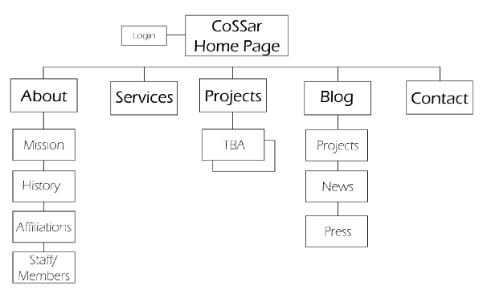

CLIENT
Seattle Opt Out
Seattle, WA
Seattle Opt Out is an organization that
2015
SERVICES
- Web Design
- UX Design
- Bootstrap
- WordPress Integration
GITHUB >>
GITHUB WIKI w/ DELIVERABLES>>
UX ANALYSIS
Seattle Opt Out wanted the user to use the website as a reference tool for standardized testing.


STYLES
Seattle Opt Out wanted a welcoming, warm color pallete.